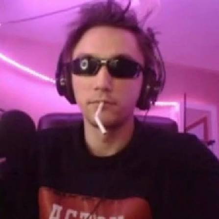

About Serega Pirat
Serega Pirat is a well-known internet personality, streamer, and musician. He started creating content based on the game Dota 2 and later moved away from that image;
his association with this game alone is a very important element of modern Russian meme culture.
Key Milestones
- 2018: Starts his official streaming activity focusing on Dota 2 gameplay.
- 2020: Released his first viral music tracks that expanded his audience.
- 2022: Reached major growth milestones across Twitch and YouTube with hundreds of thousands of followers.
- 2023: Released popular music singles and music videos that racked up millions of views.
Key Facts
- Known for playing and streaming Dota 2.
- Produces his own music tracks alongside streaming.
- Pioneer of YouTube creative communities.
- Frequently collaborates with other gaming creators and meme culture personalities.
Photo

Quote
“Mom says I'm a special boy.”
— Serega Pirat in song "on the moon"
Highlight
Serega Pirat pseudo-cover on "Where is my mind":
External Links
Visit the official Serega Pirat Twitch Channel to watch his live streams.